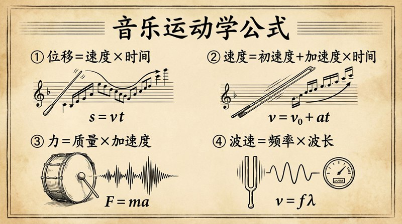

返回课程列表
第三课
运动学
声波传播与音高频率的运动描述
⏱️ 约50分钟
声音在空气中以波的形式传播，其运动可以用运动学来精确描述。频率决定音高，振幅决定音量，波形决定音色。
声波的运动学描述
声波是纵波，空气分子沿传播方向前后振动。声速在20°C空气中约为343m/s，频率范围20Hz-20kHz为人耳可听范围。

音乐中的声学参数
声波参数与音乐感知的对应：
- 频率→音高：A4=440Hz是国际标准音，每升高一个八度频率翻倍
- 振幅→音量：响度以分贝(dB)衡量，正常对话60dB，摇滚演唱会110dB
- 波形→音色：正弦波纯净（音叉），复杂波形丰富（小提琴含大量泛音）
- 相位→空间感：双耳接收的相位差让我们判断声源方向
多普勒效应与音乐
当声源与听者相对运动时，听到的频率会发生变化。这就是多普勒效应，在音乐表演和录音中都有实际应用。
运动中的声音变化
多普勒效应在音乐场景中的体现：
- 救护车经过时音调先高后低，就是多普勒效应的日常体验
- 旋转扬声器（Leslie音箱）利用多普勒效应创造颤音效果
- 合唱团中歌手的微小移动产生自然的合唱效果
- 电子音乐中模拟多普勒效应制造空间运动感